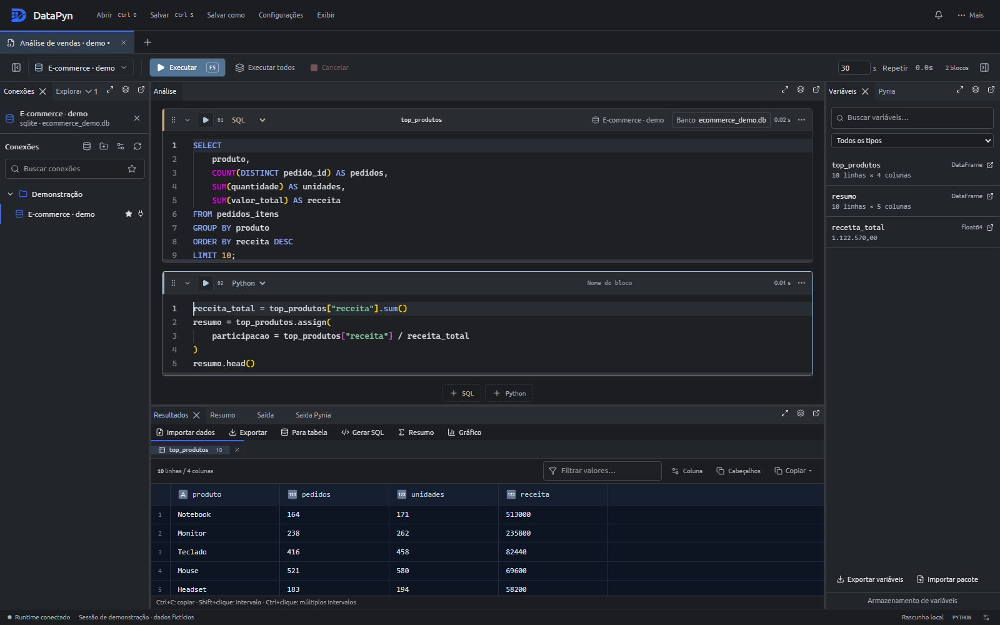
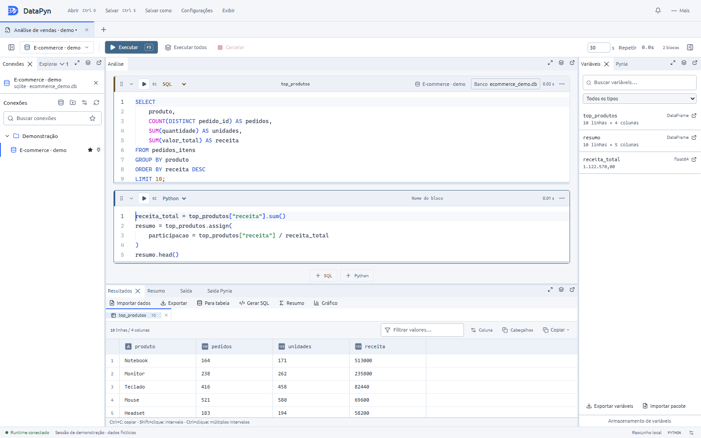
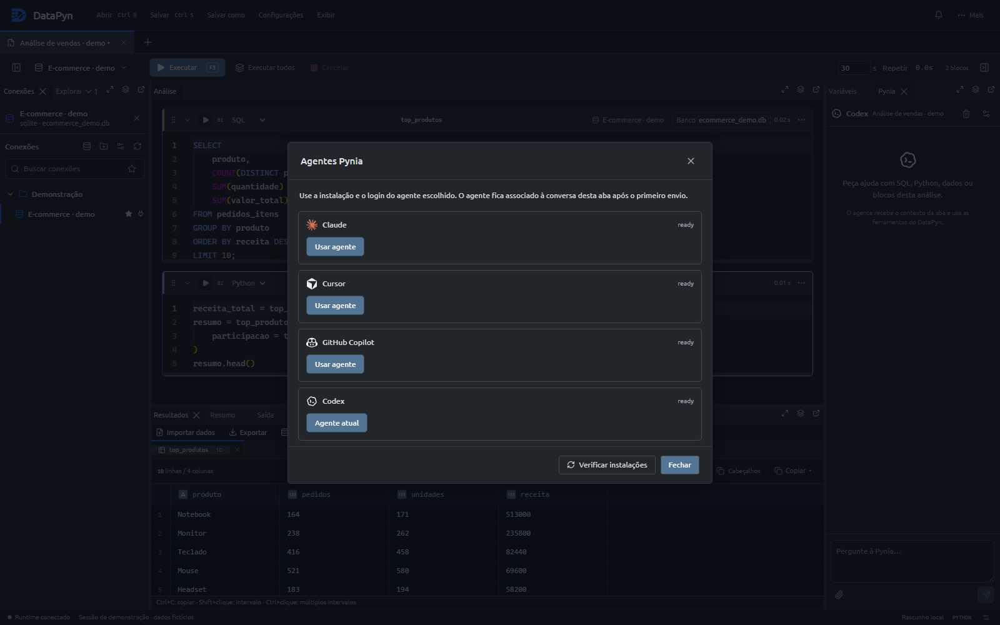
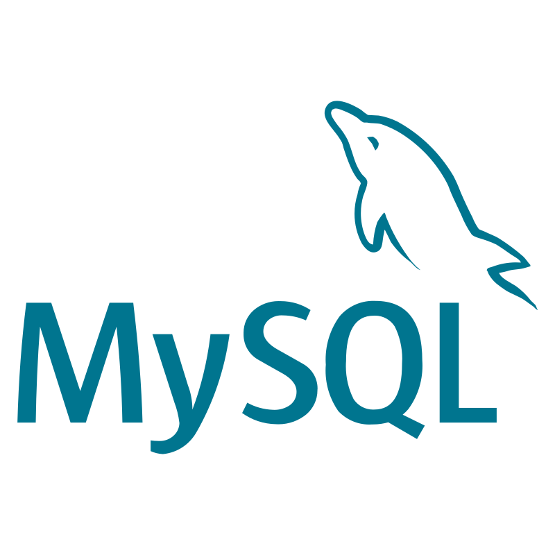

SQL + Python blocks
Mix queries and scripts in one session. Run blocks independently and keep context between steps.
The current DataPyn desktop app is built with Tauri: SQL and Python blocks, Monaco editing, result grids, and Pynia in one workspace. Native installers include the Python runtime.

From ad-hoc SQL to reproducible Python — without leaving the editor.
Mix queries and scripts in one session. Run blocks independently and keep context between steps.
Autocomplete, validation, and cross-database references — even offline.
SQL Server, PostgreSQL, MySQL, MariaDB, SQLite, and Databricks.
Save sessions and workspaces as .dpw files, organize connections, and arrange dockable panels.
Familiar editing with themes, minimap, and inline completions tuned for SQL and Python.
Import CSV, JSON, and XLSX data, export results, and save your analysis as a standalone Python script.
Native installers with the Python runtime and isolated kernels for each session.
SQL and Python blocks, result grids, and dockable panels in the current desktop interface.

Pynia
Pynia connects your coding agent to the active session: connection, schema, blocks, results, and selection. Use its tools to write SQL and Python, inspect data, and run blocks.
Agents use their own installation and login. Some require a subscription. Choose and configure your agent in the Pynia panel.
Supported agents

Native drivers and familiar connection dialogs.

MySQLInstall on Windows, Linux, or macOS, then connect and run your first block.
Get the latest Tauri installer for your operating system. The Python runtime is included.
Open Connections and register your database.
Open the Pynia panel, choose Claude, Cursor, GitHub Copilot, or Codex, and follow the agent setup instructions.
Create SQL and Python blocks, execute with F5, and continue your analysis with the results and Pynia panels.
Guides for connections, sessions, Pynia, and advanced SQL.
Download DataPyn, connect your databases, and meet Pynia in the chat panel.
Download for Windows